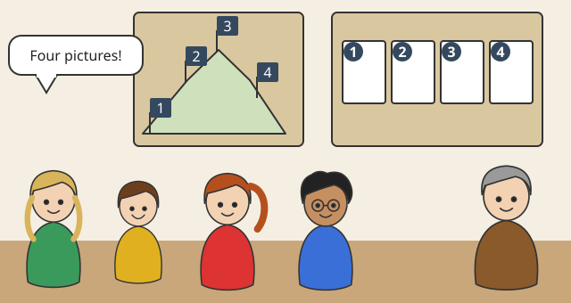
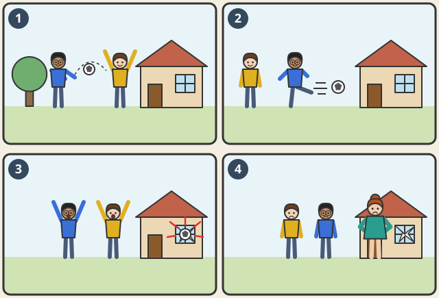
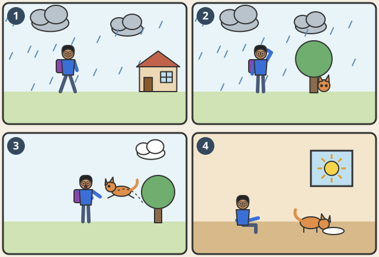
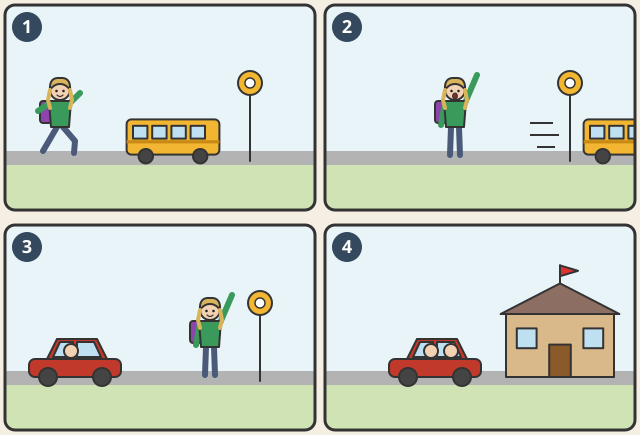

Eine Bildergeschichte erzählen
Mit einem KI-Tutor lernen
Ein KI-Tutor erklärt dir diese Seite und hilft dir bei den Aufgaben. Wähl deinen Assistenten:
Mit Claude öffnen Mit ChatGPT öffnen Mit Mistral Vibe öffnen
Du nutzt dein eigenes Konto beim Anbieter. Der Assistent ist kein Angebot von lernapps.net: lernapps liefert nur Inhalte und Aufgaben. Die Wahl gilt für alle Seiten, nur auf diesem Gerät.
Vier Bilder erzählen eine Geschichte

Von links: Sophie (Zöpfe), Peter (gelbe Jacke), Ellie (roter Pferdeschwanz), Amir (Brille) und Mr Hill (graue Haare). Neben dem Geschichtenberg hängen vier Rahmen für die Bilder.
Quelle: eigene Zeichnung. Lizenz: CC-BY-4.0.Am Mittwoch hängt Mr Hill vier Bilder zu einer Geschichte auf. Das erste Bild passt zum Fähnchen beginning, das letzte zum Fähnchen ending. Amir zeigt auf ein Bild, auf dem Ellie zum Laden (englisch: shop) geht. Er erzählt es als Teil einer Geschichte.
Aufgabe
Lösung
Ellie walked to the shop richtige Antwort
Eine Geschichte erzählst du im simple past.
Ellie is walking to the shop
Das beschreibt das Bild, es erzählt noch nicht.
Ellie walks to the shop
Das ist das simple present, eine Geschichte steht im simple past.
Beschreiben steht im present, erzählen im simple past.
Das kannst du danach: Du schreibst zu vier Bildern einen zusammenhängenden Text im simple past und verbindest die Sätze mit Wegweisern.
Ein Satz für jedes Bild
Mr Hill zeigt diese Bilderfolge. Die Bilder haben keine Wörter, du erzählst sie selbst im simple past, das du von Montag kennst.

Die Bilderfolge vom Ball und vom Fenster. Die Jungen sind Peter (gelbe Jacke) und Amir (Brille), die Frau an der Tür mit dem roten Dutt und der türkisen Strickjacke ist Mrs Parker.
Quelle: eigene Zeichnung. Lizenz: CC-BY-4.0.So erzählt Ellie die Geschichte: „First Peter and Amir played with a ball in the garden. Then Amir kicked the ball very hard. Suddenly the ball hit the window. After that the boys went to the door and Mrs Parker came out. Finally they said sorry.“
Merke
Schreibe zu jedem Bild mindestens einen Satz, im simple past und mit Wegweisern. Bild 1 ist das beginning, Bild 4 das ending, dazwischen stehen then, after that und suddenly. Beim Erzählen sagst du nicht, was du gerade siehst (is playing), sondern was passierte (played). Zähle nicht nur auf, sondern verbinde die Sätze mit Wegweisern. Du darfst etwas dazuerfinden, das zur Geschichte passt, zum Beispiel einen Namen.
Erzähle die Bilder von Amir und der Katze
Aufgabe
Wähle die richtige Form für die Erzählung.
Tipp
Eine Geschichte steht im simple past. Einige Verben sind unregelmäßig.
- Dann nahm Ellie einen Apfel. → Then Ellie … an apple.
- Plötzlich lachte Peter. → Suddenly Peter ….
- Danach liefen sie nach Hause. → After that they … home.
- Zum Schluss sagte Sophie danke. → Finally Sophie … thank you.
Lösung
- Then Ellie took an apple.
- Suddenly Peter laughed.
- After that they ran home.
- Finally Sophie said thank you.
Aufgabe
Lösung
First Peter loses his scarf. Then he looks for it. Finally he finds it under a chair.
Das steht im simple present, eine Geschichte steht im simple past.
Peter lost his scarf. He looked for it. He found it under a chair.
Die Zeit stimmt, aber die Sätze stehen nur nebeneinander. Es fehlen Wegweiser.
First Peter lost his scarf. Then he looked for it. Finally he found it under a chair. richtige Antwort
simple past und Wegweiser, so wird es erzählt.
Am besten steht eine Bildergeschichte im simple past und hat Wegweiser.

Die Bilderfolge von Amir und der Katze. Der Junge mit Brille ist Amir.
Quelle: eigene Zeichnung. Lizenz: CC-BY-4.0.Aufgabe
Lösung
Richtige Antwort: 1. Amir is walking home in the rain., 2. Amir is standing under a tree., 3. A little cat is jumping into his arms., 4. The cat is drinking milk in the house.
Die Sätze folgen den Bildern 1 bis 4.
Aufgabe
Erzähle die Bilder im simple past. Schreibe zu jedem Bild einen Satz. Der Hinweis nennt den Wegweiser am Satzanfang und die Wörter, die du brauchst.
- First · Amir · walk · home
- Then · Amir · hear · noise
- Suddenly · small cat · jump · out
- Finally · cat · drink · milk
Lösung
- First Amir walked home. (auch richtig: First Amir walked home in the rain.; First Amir walked home from school.; First Amir walked home with his bag.)
- Then Amir heard a noise. (auch richtig: Then Amir heard a sound.; Then Amir heard something.)
- Suddenly a small cat jumped out. (auch richtig: Suddenly a small cat jumped out from behind the tree.; Suddenly a small cat jumped into his arms.; Suddenly a little cat jumped out.; Suddenly a little cat jumped out from behind the tree.; Suddenly a little cat jumped into his arms.; Suddenly a cat jumped out.; Suddenly a cat jumped out from behind the tree.; Suddenly a cat jumped into his arms.)
- Finally the cat drank some milk. (auch richtig: Finally the cat drank the milk.; Finally the cat drank milk.)
Aufgabe
Hör zu und schreibe, was du hörst.
- KI
- KI
- KI
Lösung
- Suddenly the dog ran into the kitchen.
- After that the girls cleaned the table.
- Finally they all laughed with Peter.
Selbst sagen und eine Bildergeschichte schreiben
Aufgabe
Hör zu, sprich nach und nimm dich auf. Vergleiche dann mit dem Original.
Tipp
Hör zu. Sprich dann langsam nach.
- What is in the first picture?KI
- What happens in the next picture?KI
- What is in the last picture?KI
Zum Aufnehmen braucht diese Aufgabe JavaScript. Die Beispiele kannst du auch ohne anhören.
Lösung
- What is in the first picture?
- What happens in the next picture?
- What is in the last picture?
Offene Aufgabe
Sieh dir die vier Bilder an. Schreibe dazu eine Geschichte im simple past, vier bis fünf Sätze, mit Wegweisern.

Die Bilderfolge von Sophie und dem Bus. Das Mädchen mit den Zöpfen ist Sophie.
Quelle: eigene Zeichnung. Lizenz: CC-BY-4.0.Tipp
Die App bewertet nicht. Prüfe anhand der Punkte.
Eine gute Antwort enthält:
Lösung
First Sophie ran to the bus stop. Then the bus left without her. Suddenly a red car came, and Sophie waved. Finally Sophie got into the car and the car went to the school.
Rückblick und Donnerstag
Rückblick auf Dienstag und Mittwoch: Du hast Sätze mit Wegweisern geordnet, ein Bild mit seinen Plätzen beschrieben und zu vier Bildern eine Geschichte im simple past geschrieben.
Am Donnerstag gibt Mr Hill keine Bilder mehr aus. Du erzählst selbst eine Geschichte mit Anfang, Mitte und Ende.